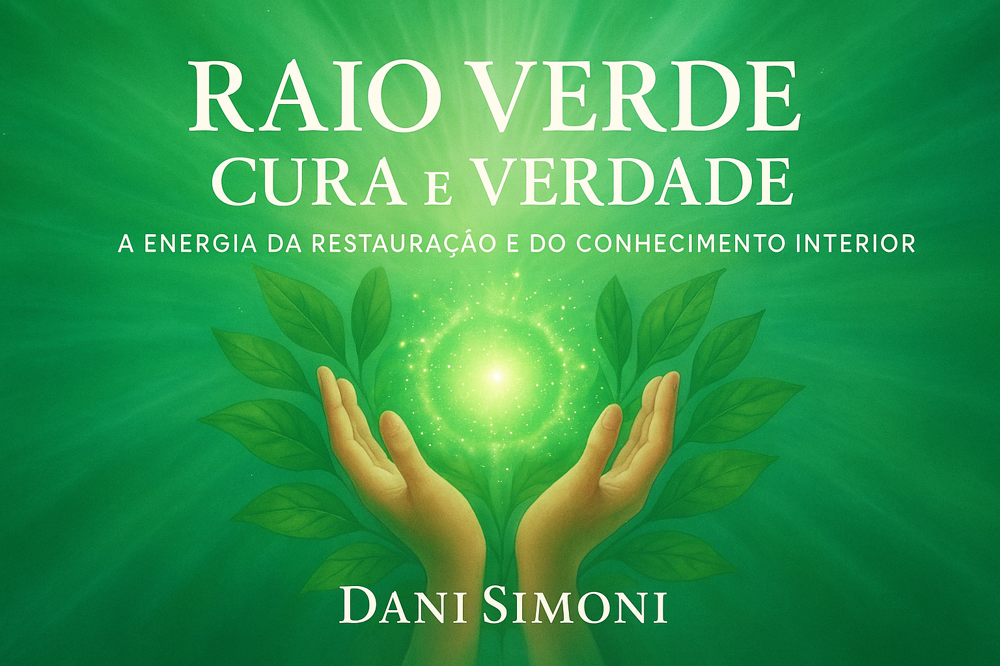

🌿 O que você encontrará neste eBook:
- Os fundamentos da cura vibracional com o Raio Verde
- Conexão com Mestre Hilarion e Arcanjo Rafael
- Afirmações e visualizações de cura profunda
- Ritual verde de liberação emocional e regeneração
- Práticas com Reiki, meditações e comandos de luz